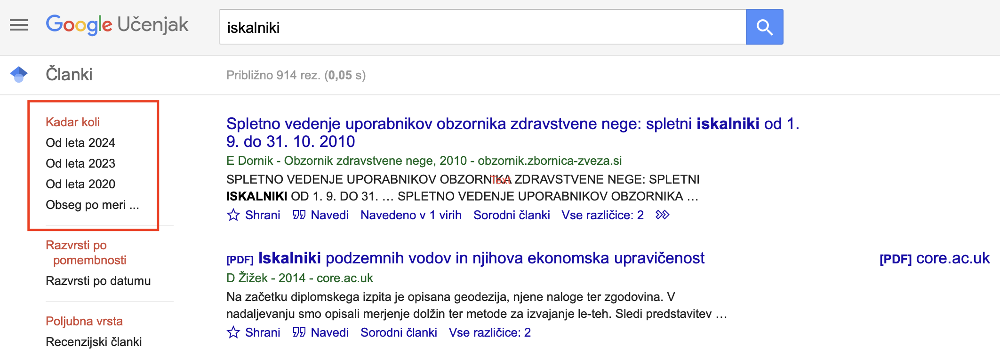
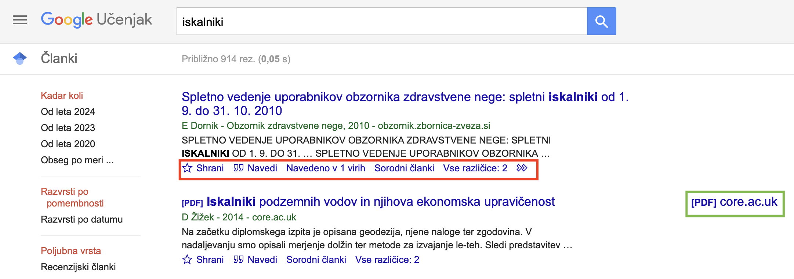
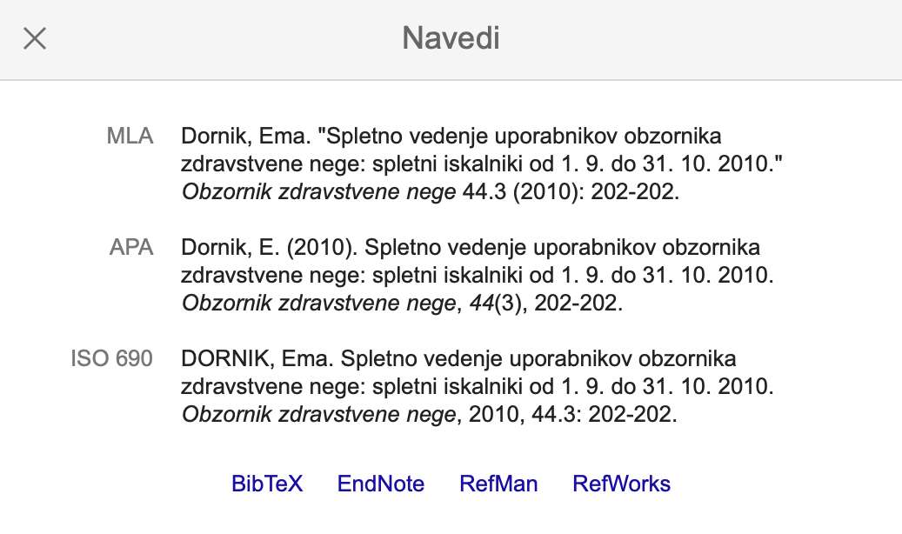
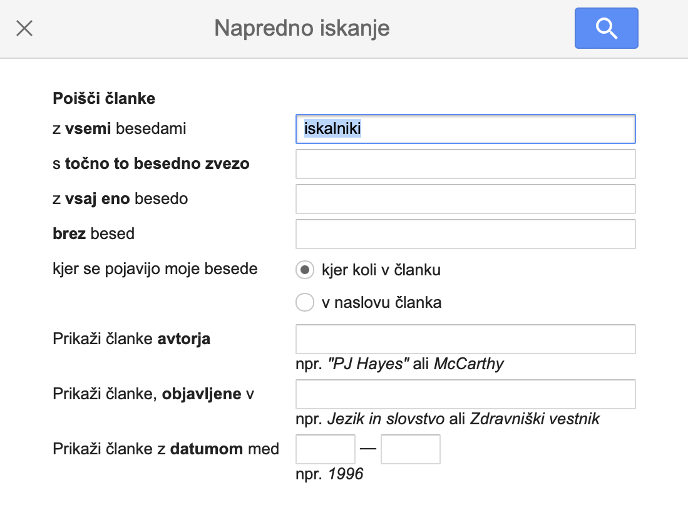
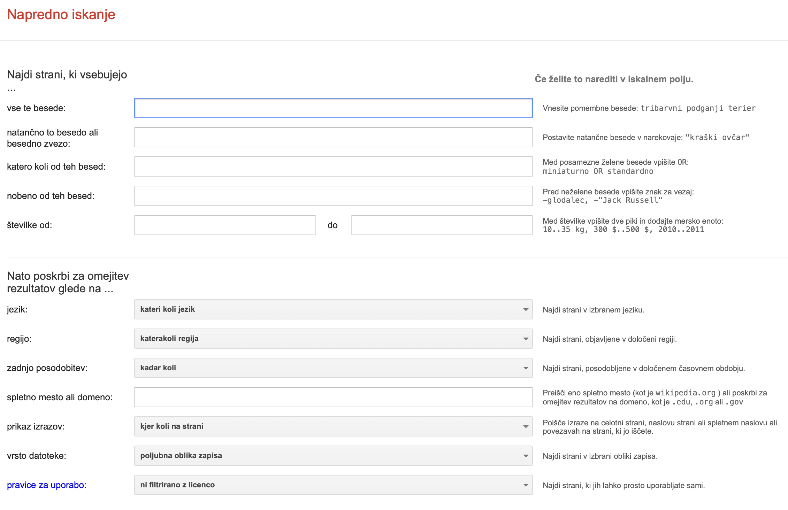
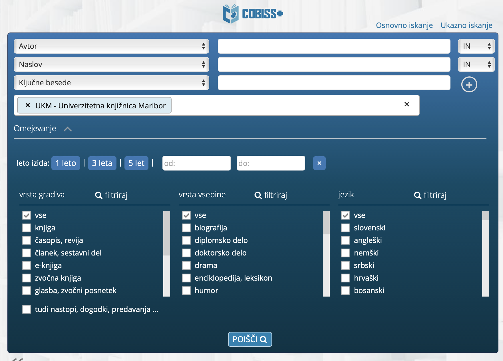

Uporaba iskalnika v šolstvu
Vsi se tekom šolanja srečamo z predstavitvami, seminarskimi, itd. Zato je pomembno, da znamo uporabljati funkcije, ki so omenjene pod zavihkom funkcije in drugimi stranmi ter pripomočki, ki nam lahko pomagajo in olajšajo izdelavo naših projektov.
Koliko seminarskih, predstavitev in podobno smo naredili tekom študija? Kako smo prišli do virov? Nam je kdo pokazal kako in kje iskati? Vse to so vprašanja, ki bi jih bilo smiselno nasloviti.
Od učencev se pričakuje, da vse to znajo in seveda naredijo, nihče pa jih o tem ne poduči. Zato bomo na tej strani pogledali ključne strani za vsakega učenca, dijaka ali celo študenta. Seveda se strani na katerih bomo iskali razlikujejo glede na stopnjo izobrazbe, ki jo imamo, kljub temu pa poznamo nekatere, ki lahko koristijo vsem.
Za začetek se spodobi, da si pogledamo funkcije, naslovljene pod zavihkom funkcije (osnovne funkcije, napredne funkcije, triki za izbolšanje rezultatov iskanja).
Pomembno je da si pogledamo določene strani, ki nam lahko pomagajo pri iskanju, kot so:
Google Učenjak
Zagotavlja preprost način za široko iskanje strokovne literature. Omogoča iskanje znanstvenih člankov, knjig, visokošolskih del, poročil in drugih znanstvenih del iz različnih virov - založnikov, arhivov odprtega dostopa ter spletnih mest akademskih institucij.
Rezultate lahko omejimo glede na datum, ob kliku na »Obsegom po meri«, lahko vpišemo letnice obdobja, ki ga želimo zajeti.
Poleg naslova in opisa spletne strani Google Učenjak ponuja tudi (rdeča obroba): navajanje, sorodni članki, vse različice itd. Ob kliku na element v zeleni obrobi, pa dobimo dostop do celotnega besedila. Ob kliku na »navedeno v xx virih« dobimo dostop do virov v katerih je citirana naša stran. S klikom na »sorodni članki« se nam prikažejo članki sorodni naši strani. S klikom na »vse razičice« se prikažejo različice naše strani.
Ob kliku na »navedi« se nam ponudijo različne možnosti za citiranje.
Google Učenjak pa ima tudi funkcijo napredno sikanje, ki ti ponuja več kriterijev glede na katere lahko omejimo rezultate.
Napredno iskanje
Omogoča nam selekcijo vsebine, ki jo iščemo. Tako da so naši rezultati kar se da skladni z poizvedbo.
Pixabay, Pixels, Freepik...
Spletne zbirke, kot so Pixabay, Pexels in Freepik, so spletna mesta, ki ponujajo zbirke brezplačnih slik, ilustracij, vektorskih grafik, videoposnetkov in drugih medijskih vsebin. Te zbirke so pogosto namenjene oblikovalcem, razvijalcem, ustvarjalcem vsebin in drugim profesionalcem, ki potrebujejo vizualne materiale za svoje projekte.
Te zbirke so priročne zaradi:
- Raznolikosti vsebin
Ponujajo široko paleto vizualnih vsebin, nekatere vsebujejo tudi zvočne vsebine. - Dostopnost
Omogočajo dostop do visokokakovostnih vizualnih vsebin brezplačno ali z minimalnimi striški. - Licenciranje
Večino teh strani ima enostavne licence, z lahkim dostopom.
Cobiss+
COBISS (kratica za Co-operative Online Bibliographic System & Services, slovensko Kooperativni online bibliografski sistem in servisi) je slovenski knjižnični informacijski sistem, ki ga je razvil mariborski Inštitut informacijskih znanosti (IZUM). COBISS je organizacijski model povezovanja knjižnic v nacionalni knjižnični informacijski sistem z vzajemno katalogizacijo, vzajemno bibliografsko-kataložno bazo podatkov COBIB in lokalnimi bazami podatkov sodelujočih knjižnic, bazo podatkov o knjižnicah COLIB, normativno bazo podatkov CONOR ter s številnimi drugimi viri in funkcijami. (Wikipedija, 2023)
Učenci, dijaki in študenti ga uporabljajo za iskanje knjižnih ali elektronskih virov, katere si nato lahko izposodijo v knjižnici. Poleg naslova dela, imena avtorja, datuma izdaje itd. je možno pogledati tudi katere knjižnice imajo ta vir in ali je možen za izposojo.
